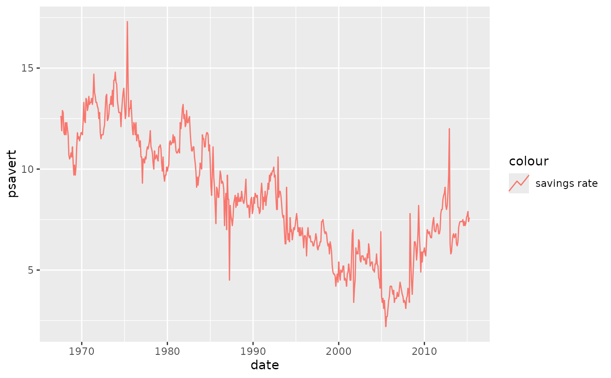
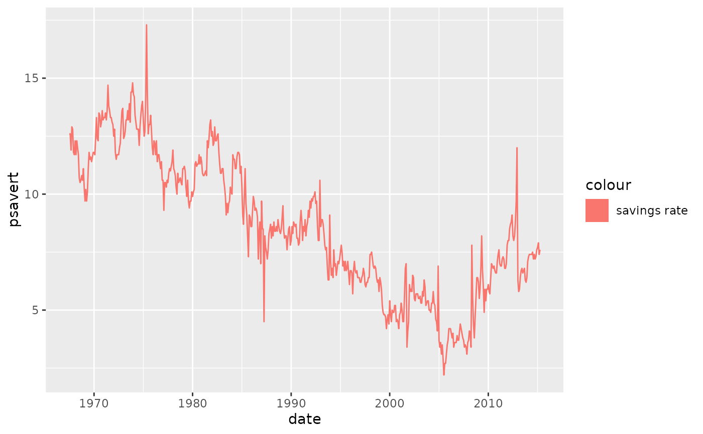

Each geom has an associated function that draws the key when the geom needs
to be displayed in a legend. These functions are called draw_key_*(), where
* stands for the name of the respective key glyph. The key glyphs can be
customized for individual geoms by providing a geom with the key_glyph
argument. The draw_key_gshape function provides this interface for custom
key glyphs used with geom_gshape().
Usage
draw_key_gshape(data, params, size)
Arguments
- data
A single row data frame containing the scaled aesthetics to
display in this key
- params
A list of additional parameters supplied to the geom.
- size
Width and height of key in mm.
Examples
p <- ggplot(economics, aes(date, psavert, color = "savings rate"))
# key glyphs can be specified by their name
p + geom_line(key_glyph = "timeseries")

# key glyphs can be specified via their drawing function
p + geom_line(key_glyph = draw_key_rect)
